글로벌 시장 보고서 (미국 중심) · 2026-10-30
발행 시점 2026-10-31 07:00 KST · 요약 대상 기간 2026-09-30 ~ 2026-10-30
1. 시장 요약
S&P500은 10월 30일 인텔·아마존 실적 실망과 AI 투자 회수 우려로 1.82% 내린 7,580.07에 마감해 10월 한 달 0.9% 하락했고, 나스닥은 같은 기간 5.3% 떨어졌다.
지수 현황
기준: 발행 시점(2026-10-31 07:00 KST)에 확정된 각 지수의 직전 종가
| 지수 |
종가 |
종가일 |
1주 |
1개월 |
3개월 |
연초 대비 |
1년 |
52주 고점 대비 |
| S&P500 |
7,580.07 |
2026-10-30 |
-0.6% |
-0.9% |
+1.9% |
+10.7% |
+11.1% |
-3.4% |
| 나스닥 종합 |
25,437.00 |
2026-10-30 |
-2.0% |
-5.3% |
+1.3% |
+9.4% |
+7.9% |
-8.2% |
| 러셀2000 |
2,811.84 |
2026-10-30 |
+1.3% |
+0.5% |
-4.6% |
+13.3% |
+14.0% |
-8.4% |
| MSCI ACWI |
156.04 |
2026-10-30 |
-0.5% |
-1.7% |
+0.2% |
+10.3% |
+10.5% |
-4.2% |
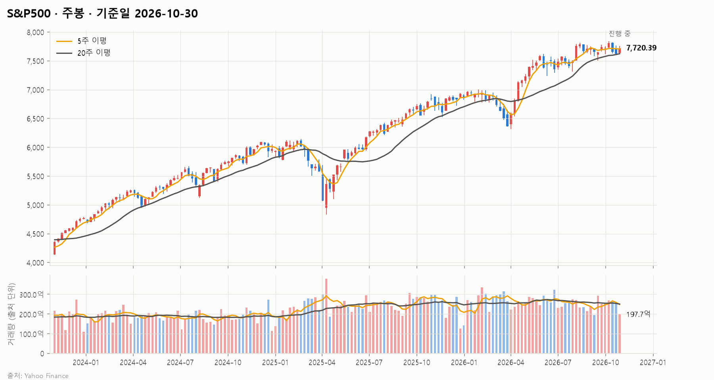
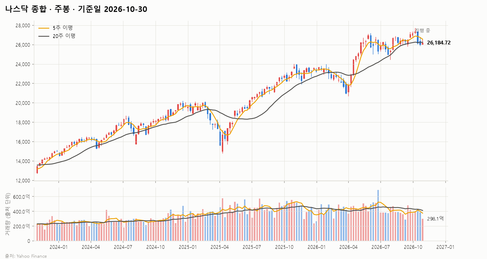
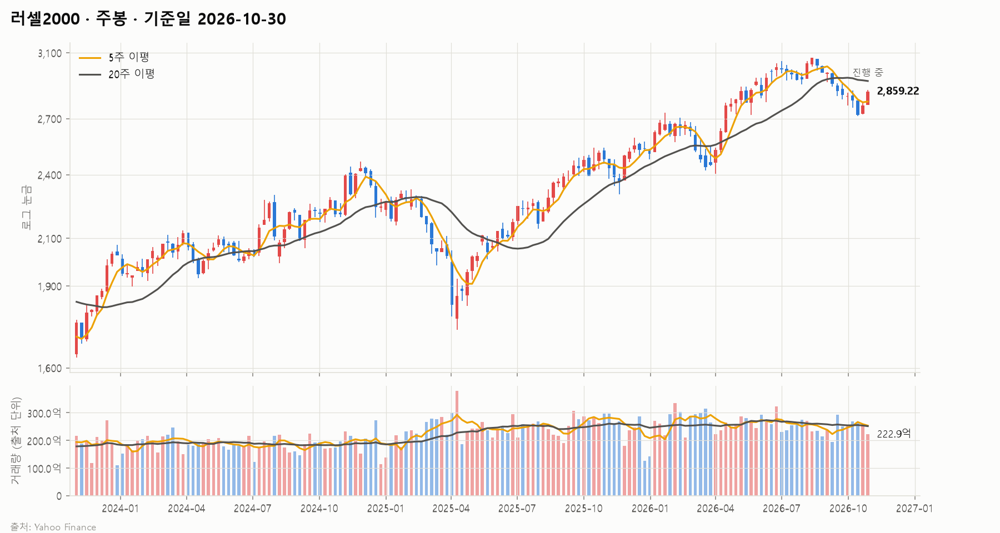
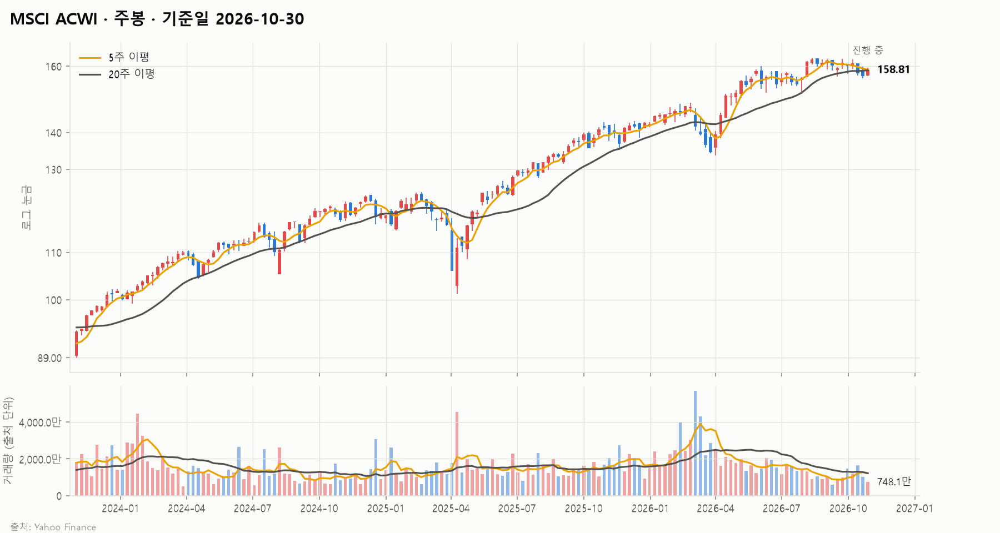
주요 요인
- [정책·금리] 연준 동결, 인상 소수의견 2명 — 10월 28일 FOMC는 기준금리를 3.75~4.00%로 동결했다. 표결은 10대 2였고 쿡 이사와 해맥 클리블랜드 연은 총재가 0.25%p 인상을 주장했다. 9월 16일 0.25%p 인상 이후 첫 동결이며, 성명은 "인플레이션이 여전히 높다"고 적었다 (Blockchain.News). 해석: 인하가 아니라 추가 인상 여부가 쟁점인 국면이라, 금리 하락에 기댄 밸류에이션 확장을 기대하기 어렵다.
- [정책·금리] 장기금리 5% 안팎 — 미 10년물 금리는 4.98%(10/29)로 3개월 전 4.67%에서 올랐고, 10년 실질금리는 2.63%로 1년 전 1.78%보다 0.85%p 높다 (FRED, 2.3절). 해석: 할인율 부담이 성장주에 더 크게 작용해, 최근 1개월 나스닥(−5.3%)이 S&P500(−0.9%)보다 크게 부진했다.
- [이익·밸류] 빅테크 실적 실망과 AI 투자 회수 우려 — 10월 29일 알파벳이 3분기 실적 부진과 잉여현금흐름 −90억7천만 달러로 약 12% 떨어졌다 (10bmnews). 30일에는 인텔이 4분기 매출 가이던스(150억~160억 달러)가 예상(171억 달러)을 밑돌아 28.58% 폭락했고, 아마존은 3분기 주당순이익이 예상을 밑돌고 AI 투자로 최근 12개월 잉여현금흐름이 −424억 달러를 기록해 1.41% 내렸다. 이날 반도체 지수는 7.2% 떨어졌고 S&P500(−1.82%)과 나스닥(−2.86%)은 6월 이후 가장 크게 하락했다 (StockTitan). 나스닥100은 올해 세 번째 조정 국면에 들어갔다 (The Wall Street Republic). 해석: AI 설비투자의 수익성 의문이 실적으로 드러나면서, 지수를 끌어온 대형 기술·반도체주의 이익 기대가 꺾이고 있다.
- [달러·원자재·심리] 유가 100달러대와 중동 긴장 — WTI는 10월 30일 2.08% 오른 배럴당 104.12달러에 마감했다. 호르무즈 해협에서 유조선이 기뢰에 피격되며 이란과의 긴장이 커졌다 (The Wall Street Republic). 3개월 전 83.6달러, 1년 전 60.6달러에서 크게 오른 수준이다 (Yahoo Finance, 2.6절). VIX는 19.42로 올랐지만 20 아래다. 해석: 에너지발 물가 압력이 연준의 매파적 태도를 뒷받침한다. 기술주 급락에도 공포 지수는 아직 높은 수준이 아니다.
2. 지표 (최근 3년)
2.1 경기
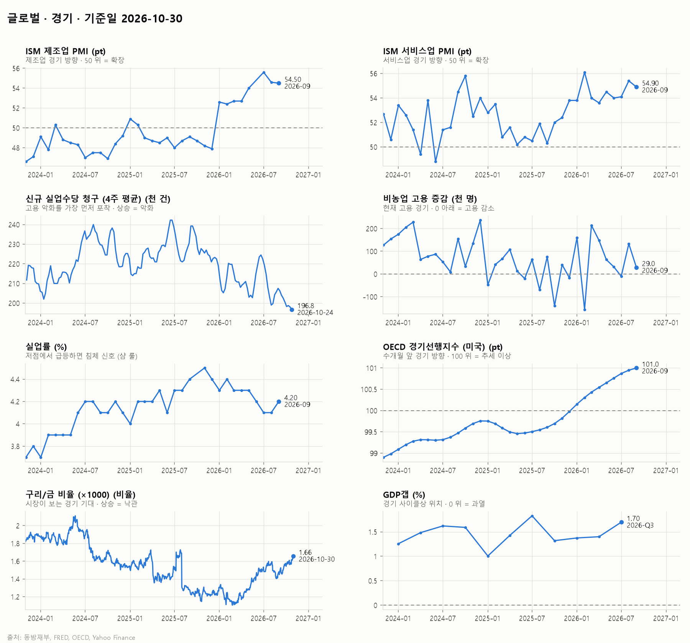
| 지표 |
최신값 |
기준 시점 |
3개월 전 |
1년 전 |
| ISM 제조업 PMI (pt) |
54.50 |
2026-09 |
54.00 |
49.10 |
| ISM 서비스업 PMI (pt) |
54.90 |
2026-09 |
54.00 |
50.30 |
| 신규 실업수당 청구 (4주 평균) (천 건) |
196.8 |
2026-10-24 |
208.0 |
227.8 |
| 비농업 고용 증감 (천 명) |
29.0 |
2026-09 |
31.0 |
76.0 |
| 실업률 (%) |
4.20 |
2026-09 |
4.20 |
4.40 |
| OECD 경기선행지수 (미국) (pt) |
101.0 |
2026-09 |
100.8 |
99.61 |
| 구리/금 비율 (×1000) (비율) |
1.66 |
2026-10-30 |
1.57 |
1.26 |
| GDP갭 (%) |
1.70 |
2026-Q3 |
1.40 |
1.83 |
2.2 물가
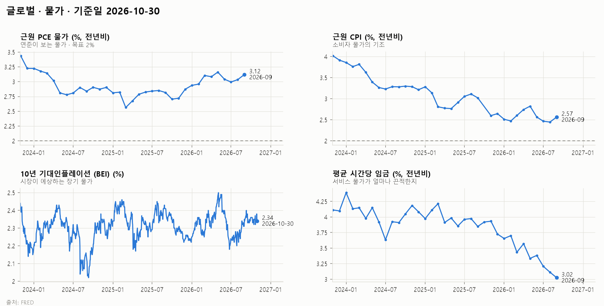
| 지표 |
최신값 |
기준 시점 |
3개월 전 |
1년 전 |
| 근원 PCE 물가 (%, 전년비) |
3.12 |
2026-09 |
3.04 |
2.82 |
| 근원 CPI (%, 전년비) |
2.57 |
2026-09 |
2.57 |
3.02 |
| 10년 기대인플레이션 (BEI) (%) |
2.34 |
2026-10-30 |
2.27 |
2.29 |
| 평균 시간당 임금 (%, 전년비) |
3.02 |
2026-09 |
3.38 |
3.85 |
2.3 정책·금리
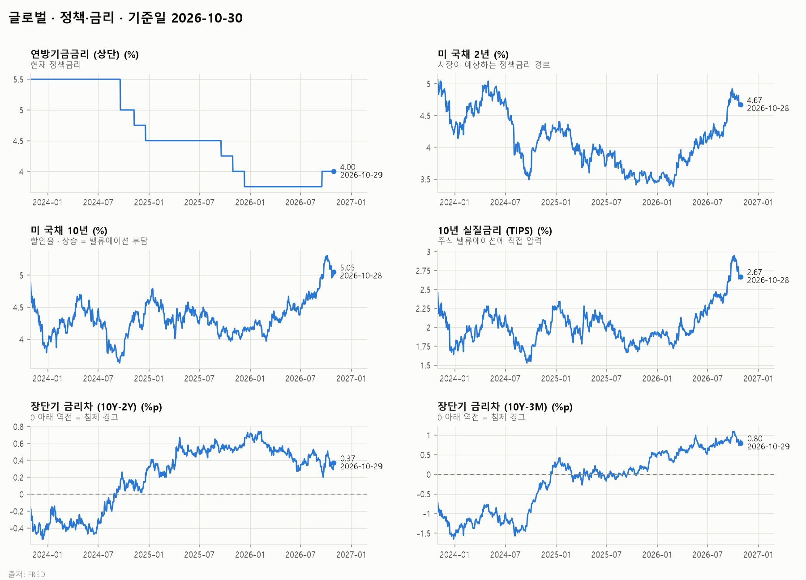
| 지표 |
최신값 |
기준 시점 |
3개월 전 |
1년 전 |
| 연방기금금리 (상단) (%) |
4.00 |
2026-10-30 |
3.75 |
4.00 |
| 미 국채 2년 (%) |
4.61 |
2026-10-29 |
4.22 |
3.59 |
| 미 국채 10년 (%) |
4.98 |
2026-10-29 |
4.67 |
4.08 |
| 10년 실질금리 (TIPS) (%) |
2.63 |
2026-10-29 |
2.41 |
1.78 |
| 장단기 금리차 (10Y−2Y) (%p) |
0.38 |
2026-10-30 |
0.45 |
0.50 |
| 장단기 금리차 (10Y−3M) (%p) |
0.78 |
2026-10-30 |
0.86 |
0.19 |
2.4 유동성·신용
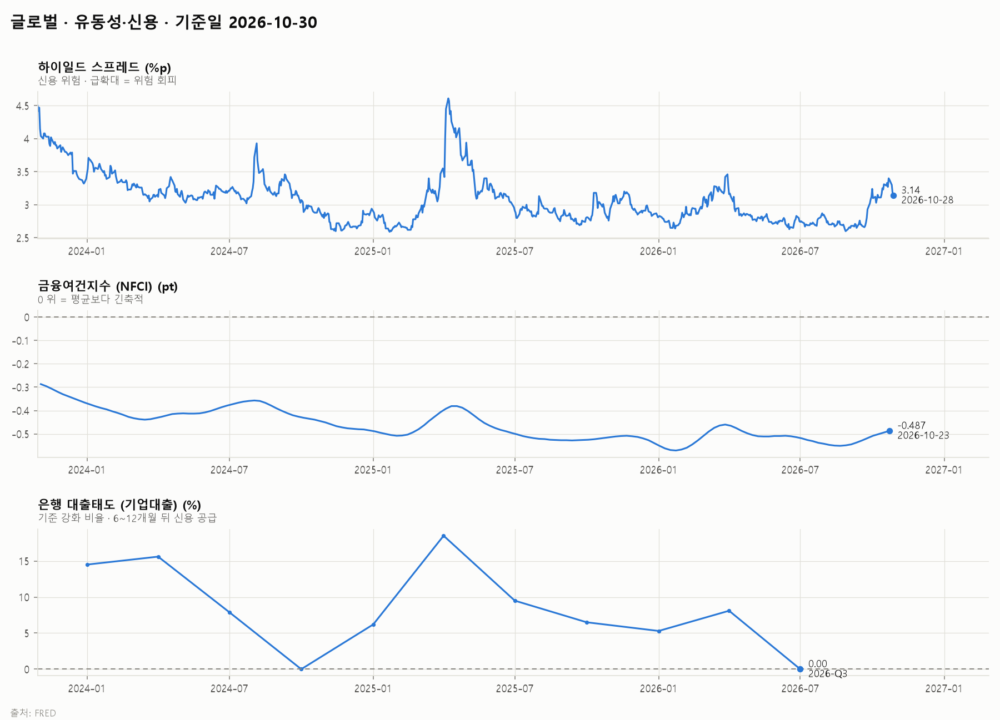
| 지표 |
최신값 |
기준 시점 |
3개월 전 |
1년 전 |
| 하이일드 스프레드 (%p) |
3.26 |
2026-10-29 |
2.87 |
2.76 |
| Baa 회사채 스프레드 (Baa − 국채 10년) (%p) |
1.49 |
2026-10-29 |
1.60 |
1.61 |
| 금융여건지수 (NFCI) (pt) |
-0.487 |
2026-10-23 |
-0.531 |
-0.520 |
| 은행 대출태도 (기업대출) (%) |
0.00 |
2026-Q3 |
8.10 |
9.50 |
2.5 이익·밸류
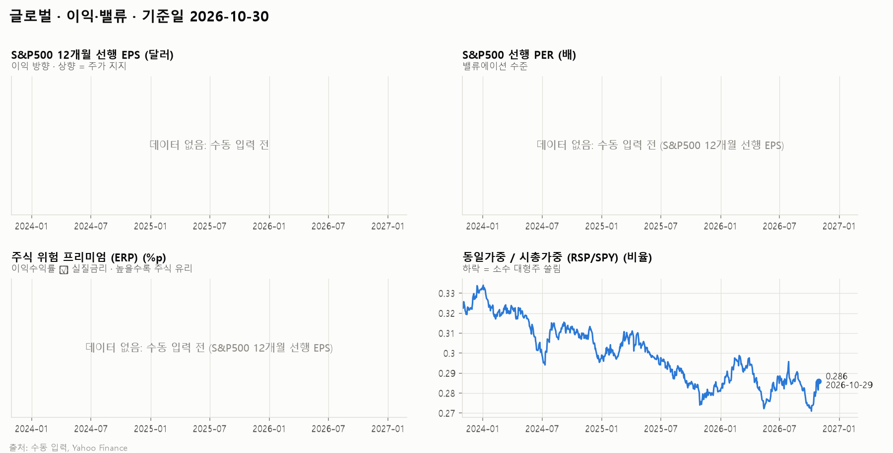
| 지표 |
최신값 |
기준 시점 |
3개월 전 |
1년 전 |
| S&P500 12개월 선행 EPS (달러) |
407.7 |
2026-10-23 |
— |
— |
| S&P500 선행 PER (배) |
18.59 |
2026-10-30 |
— |
— |
| 주식 위험 프리미엄 (ERP) (%p) |
2.75 |
2026-10-30 |
— |
— |
| 동일가중 / 시총가중 (RSP/SPY) (비율) |
0.289 |
2026-10-30 |
0.290 |
0.276 |
데이터 메모:
- S&P500 12개월 선행 EPS: 수동 입력 값 4개뿐 (2026-09-30부터)
- S&P500 선행 PER: 이력이 2026-09-30부터만 있음
- 주식 위험 프리미엄 (ERP): 이력이 2026-09-30부터만 있음
2.6 달러·원자재·심리
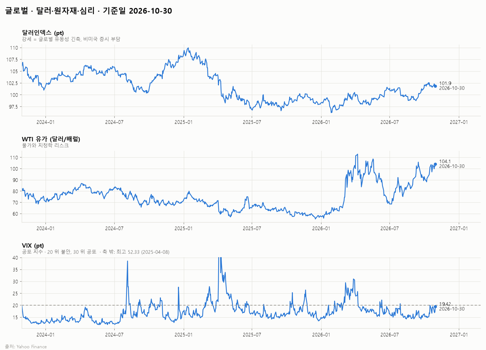
| 지표 |
최신값 |
기준 시점 |
3개월 전 |
1년 전 |
| 달러인덱스 (pt) |
101.9 |
2026-10-30 |
100.0 |
99.53 |
| WTI 유가 (달러/배럴) |
104.1 |
2026-10-30 |
83.59 |
60.57 |
| VIX (pt) |
19.42 |
2026-10-30 |
17.09 |
16.91 |
데이터 메모:
- VIX: 극단값을 축 밖으로 잘라 그림 (최고 52.33 (2025-04-08))
정정
- 2026-10-30 (발행 후): 수동 입력 대상이던 지표를 보완했다. 발행 시점(asof 2026-10-30 12:10 KST)과 지수 수치는 그대로다.
- 자동 수집으로 전환: ISM 제조업·서비스업 PMI (동방재부 경유, ISM 9월 발표치 54.5와 대조)
- 수동 입력: S&P500 선행 EPS 4개 시점 (FactSet 선행 PER을 같은 날 종가로 환산). 이에 따라 선행 PER과 ERP도 2026-09-30 이후 값이 생겼다
- 2026-10-31: 발행 시점을 2026-10-30 12:10에서 23:59 KST로 옮겨 다시 만들었다. 한국·중국/홍콩·일본 지수에 10월 30일 종가를 반영하기 위해서다. 미국·유럽 지수는 그 시각까지 확정된 10월 29일 종가 그대로다. 데이터를 다시 받으면서 그 사이 갱신된 지표 값도 반영됐다.
- 지표 추가: Baa 회사채 스프레드(BAA10Y). 하이일드 스프레드는 10월 29일 값(3.26%p)이 반영됐다.
- 2026-10-31: 지수 캔들 차트의 가격 축을 로그 눈금으로 바꿨다. 수치는 바뀌지 않았다.
- 2026-10-31: 지수 주봉 차트의 이동평균을 5·20주에서 5주(한 달)·13주(분기)로 바꿨다. 수치는 바뀌지 않았다.
- 2026-10-31: 지수 주봉 차트의 가격과 거래량 사이에 MACD(5·13·9)와 RSI(14) 패널을 추가했다. 수치는 바뀌지 않았다.
- 2026-10-31: 발행 시점을 2026-10-31 07:00 KST로 옮겨 미국 지수에 10월 30일 종가를 반영했다 (미국 세션은 한국 시간 10월 31일 새벽 마감). 한 줄 요약과 주요 요인 2~4번을 새 수치에 맞춰 고쳤고, 4번의 WTI 수치가 표와 달랐던 것(103.4달러, 재수집 전 값)도 바로잡았다. 미국 지표 중 10월 30일 값이 있는 것(VIX, WTI, 달러인덱스 등)과 그 사이 FRED에 올라온 10월 29일 금리도 반영됐다.
한국 시장 보고서 · 2026-10-30
발행 시점 2026-10-30 23:59 KST · 요약 대상 기간 2026-09-30 ~ 2026-10-30
1. 시장 요약
KOSPI는 미국발 AI 투자 수익성 우려에 따른 외국인 반도체 매도로 10월 한 달 16.2% 하락해 5,730.74(10/30)에 마감했고, 52주 고점 대비로는 −38.9%다.
지수 현황
기준: 발행 시점(2026-10-30 23:59 KST)에 확정된 각 지수의 직전 종가
| 지수 |
종가 |
종가일 |
1주 |
1개월 |
3개월 |
연초 대비 |
1년 |
52주 고점 대비 |
| KOSPI |
5,730.74 |
2026-10-30 |
+3.3% |
-16.2% |
+2.5% |
+36.0% |
+40.2% |
-38.9% |
| KOSDAQ |
724.38 |
2026-10-30 |
-3.6% |
-15.4% |
+12.3% |
-21.7% |
-18.7% |
-41.1% |
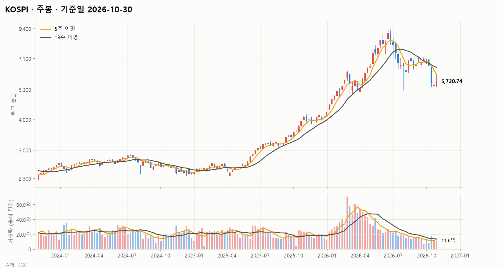
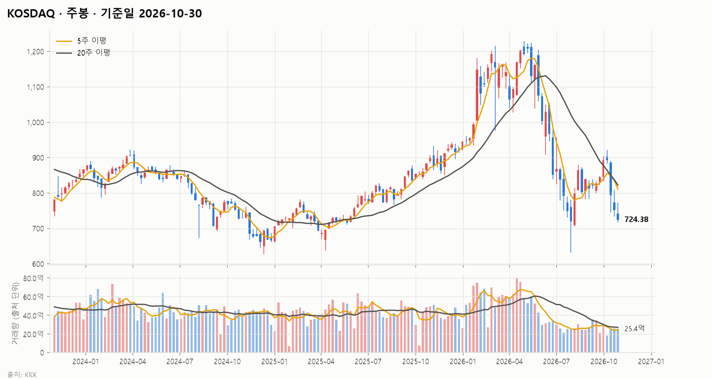
주요 요인
- [환율·수급] 10월 중순 외국인 대량 매도 — 10월 13일 코스피는 5.46% 내린 6,035.35에 마감했고 외국인은 4조5,128억 원을 순매도했다. SK하이닉스(−10.09%)와 삼성전자(−7.39%)가 급락했으며, 기사는 메모리 경쟁 심화 우려와 삼성전자 자사주 매입 종료를 원인으로 꼽았다 (서울신문). 해석: 반도체 이익 정점 논란 속에서 외국인 매도가 지수 하락을 주도했다.
- [이익·밸류] SK하이닉스 3분기 실적과 주주환원 — SK하이닉스는 3분기 영업이익 83조3,338억 원을 발표하고 약 100조 원 규모의 주주환원 계획을 밝혔다. 10월 28일 코스피는 6.63% 오른 6,012.44로 10거래일 만에 6,000선을 되찾았고 외국인은 8,228억 원을 순매수했다 (파이낸셜뉴스). 해석: 실적이 '메모리 이익 정점론'을 일부 반박하면서 외국인 매도가 잠시 멈췄다.
- [기타] 10월 30일 급락 마감 — 10월 30일 코스피는 3.48% 내린 5,730.74에 마감했다. 장중 5,599.42까지 밀리며 매도 사이드카가 발동됐고 외국인은 약 1조6천억 원을 순매도했다 (아주경제, 종가·저가·외국인 순매도는 KRX 자료와 대조). 전날 알파벳이 잉여현금흐름 악화로 12.6% 떨어지는 등 미국 기술주가 급락한 영향이다 (뉴스핌). 해석: 미국 AI 투자 수익성 우려가 반도체 비중이 큰 한국 증시에 가장 크게 전이되고 있다.
- [경기] 수출 호조와 원화 강세 — 관세청 통관 기준 수출액(달러)은 8월 전년비 +68.7%였고, 원/달러 환율은 1,340원(10/29)으로 3개월 전 1,453원보다 크게 낮아졌다 (한국은행 ECOS·Yahoo Finance, 2.1·2.6절). 해석: 수출이 이익 기반을 받치고 원화 강세는 외국인 환차익 측면에서 우호적이지만, 이번 달 주가는 이런 기초 여건보다 AI 업황 기대 변화에 더 크게 흔들렸다.
2. 지표 (최근 3년)
2.1 경기
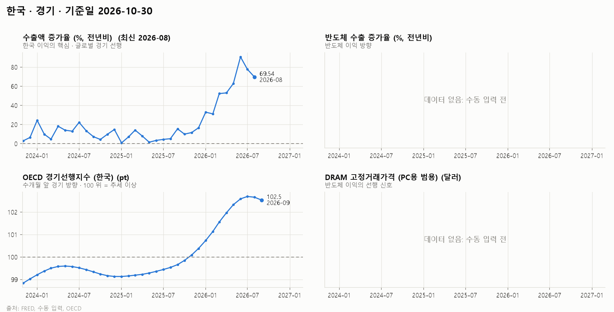
| 지표 |
최신값 |
기준 시점 |
3개월 전 |
1년 전 |
| 수출액 증가율 (%, 전년비) |
68.70 |
2026-08 |
52.90 |
1.07 |
| 반도체 수출 증가율 (%, 전년비) |
268.08 |
2026-09 |
203.03 |
22.59 |
| 선행지수 순환변동치 (pt) |
104.2 |
2026-08 |
102.9 |
99.80 |
| D램 수출물가지수 (달러 기준) (2020=100) |
289.2 |
2026-09 |
252.7 |
83.16 |
데이터 메모:
- 수출액 증가율: 최신 데이터가 2026-08로 지연
- 선행지수 순환변동치: 최신 데이터가 2026-08로 지연
2.2 물가
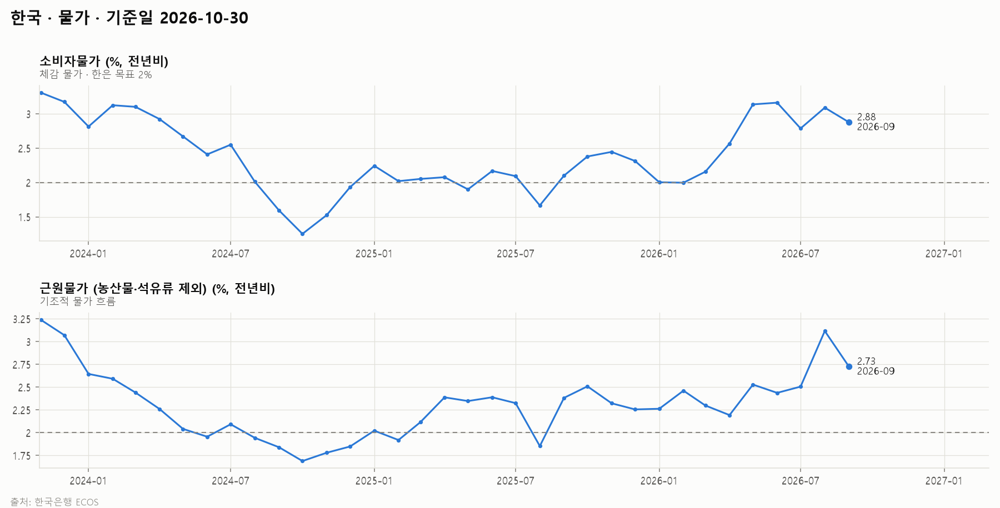
| 지표 |
최신값 |
기준 시점 |
3개월 전 |
1년 전 |
| 소비자물가 (%, 전년비) |
2.88 |
2026-09 |
3.16 |
2.10 |
| 근원물가 (농산물·석유류 제외) (%, 전년비) |
2.73 |
2026-09 |
2.44 |
2.38 |
2.3 정책·금리
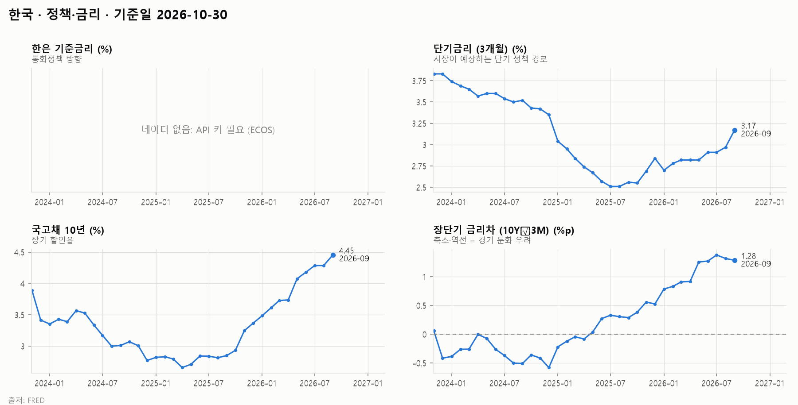
| 지표 |
최신값 |
기준 시점 |
3개월 전 |
1년 전 |
| 한은 기준금리 (%) |
3.00 |
2026-10-30 |
2.75 |
2.50 |
| 국고채 3년 (%) |
3.77 |
2026-10-29 |
3.80 |
2.68 |
| 국고채 10년 (%) |
4.08 |
2026-10-29 |
4.26 |
2.98 |
| 장단기 금리차 (10Y−3Y) (%p) |
0.32 |
2026-10-29 |
0.46 |
0.31 |
2.4 유동성·신용
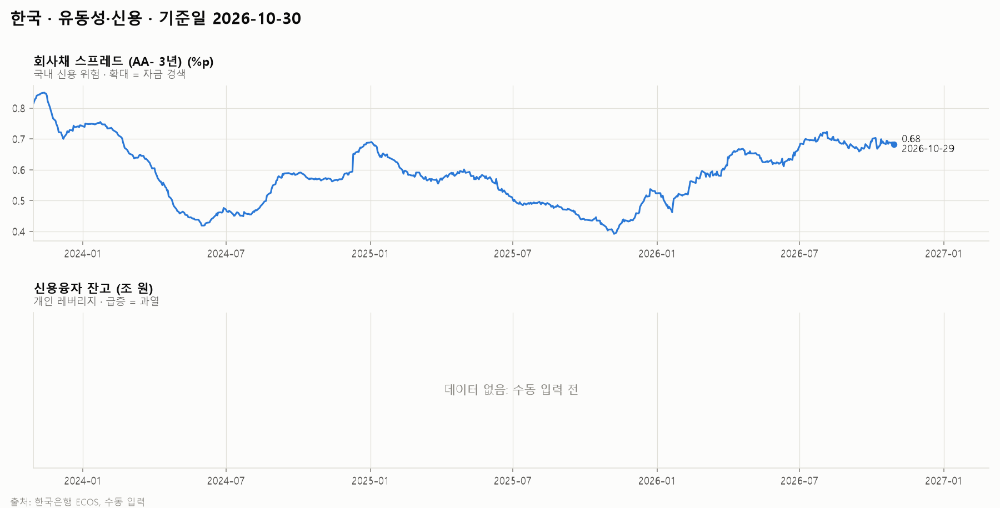
| 지표 |
최신값 |
기준 시점 |
3개월 전 |
1년 전 |
| 회사채 스프레드 (AA- 3년) (%p) |
0.68 |
2026-10-29 |
0.71 |
0.41 |
| 신용융자 잔고 (조 원) |
33.4 |
2026-09 |
37.3 |
23.5 |
2.5 이익·밸류
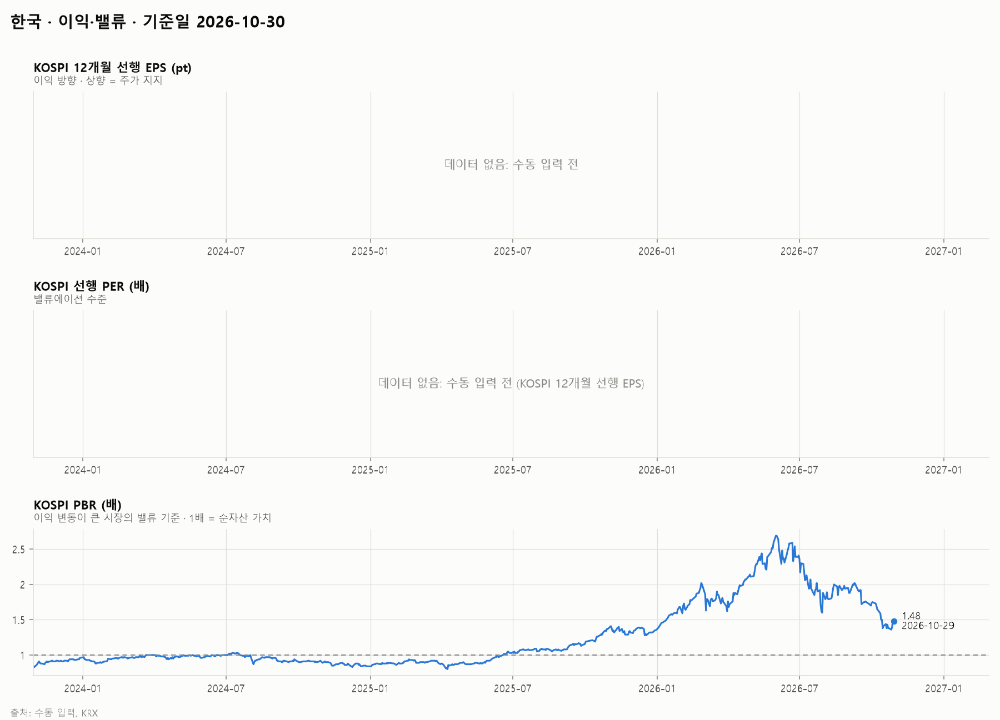
| 지표 |
최신값 |
기준 시점 |
3개월 전 |
1년 전 |
| KOSPI 12개월 선행 EPS (pt) |
1,321 |
2026-10-16 |
— |
— |
| KOSPI 선행 PER (배) |
4.20 |
2026-10-23 |
— |
— |
| KOSPI PBR (배) |
1.48 |
2026-10-29 |
1.62 |
1.37 |
데이터 메모:
- KOSPI 12개월 선행 EPS: 수동 입력 값 1개뿐 (2026-10-16부터)
- KOSPI 선행 PER: 이력이 2026-10-16부터만 있음
2.6 환율·수급
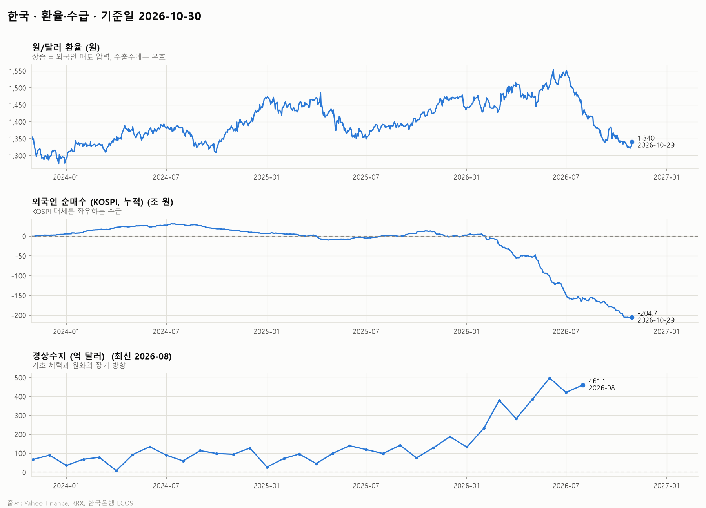
| 지표 |
최신값 |
기준 시점 |
3개월 전 |
1년 전 |
| 원/달러 환율 (원) |
1,340 |
2026-10-29 |
1,453 |
1,426 |
| 외국인 순매수 (KOSPI, 누적) (조 원) |
-204.7 |
2026-10-29 |
-164.5 |
11.3 |
| 경상수지 (억 달러) |
461.1 |
2026-08 |
386.1 |
98.5 |
데이터 메모:
- 경상수지: 최신 데이터가 2026-08로 지연
정정
- 2026-10-30 (발행 후): 한국은행 ECOS와 KRX를 연결해 지표를 보완했다. 발행 시점(asof 2026-10-30 12:10 KST)과 지수 수치는 그대로다.
- 새로 채운 지표: 한은 기준금리, 회사채 스프레드(AA- 3년), KOSPI PBR, 외국인 순매수(KOSPI 누적), 경상수지
- 출처를 바꾼 지표: 수출액 증가율(OECD 원화 기준 → 관세청 통관 달러 기준), 선행지수(OECD 경기선행지수 → 통계청 선행지수 순환변동치), 소비자물가·근원물가(OECD 집계 → 통계청. 근원물가 정의는 식료품·에너지 제외 → 농산물·석유류 제외), 국고채 10년(OECD 월평균 → 일간)
- 교체한 지표: 단기금리(3개월) → 국고채 3년, 장단기 금리차(10Y−3M) → (10Y−3Y)
- 주요 요인 4번의 수출 수치를 새 출처 기준으로 고쳤다 (+69.5% → +68.7%).
- 2026-10-30 (발행 후): 수동 입력 대상이던 지표를 보완했다. 발행 시점(asof 2026-10-30 12:10 KST)과 지수 수치는 그대로다.
- 자동 수집으로 전환 (한국은행 ECOS): 반도체 수출 증가율(반도체 수출금액지수 기준), 신용융자 잔고
- 대체: DRAM 고정거래가격 → D램 수출물가지수(달러 기준). TrendForce 계약가격은 무료 이력이 없음
- 수동 입력: KOSPI 선행 EPS 1개 시점 (한국경제 보도 선행 PER 4.29배, 산출 기준 미기재)
- 2026-10-31: 발행 시점을 2026-10-30 12:10에서 23:59 KST로 옮겨 다시 만들었다. 한국·중국/홍콩·일본 지수에 10월 30일 종가를 반영하기 위해서다. 미국·유럽 지수는 그 시각까지 확정된 10월 29일 종가 그대로다. 데이터를 다시 받으면서 그 사이 갱신된 지표 값도 반영됐다.
- KOSPI·KOSDAQ 출처를 한국거래소 공식 일봉으로 바꿨다 (Yahoo에 10월 30일 종가가 비어 있음).
- 한 줄 요약과 주요 요인 3번(장중 급락 → 마감 기준)을 10월 30일 종가에 맞춰 고쳤다.
- 2026-10-31: 지수 캔들 차트의 가격 축을 로그 눈금으로 바꿨다. 수치는 바뀌지 않았다.
- 2026-10-31: 지수 주봉 차트의 이동평균을 5·20주에서 5주(한 달)·13주(분기)로 바꿨다. 수치는 바뀌지 않았다.
- 2026-10-31: 지수 주봉 차트의 가격과 거래량 사이에 MACD(5·13·9)와 RSI(14) 패널을 추가했다. 수치는 바뀌지 않았다.
중국·홍콩 시장 보고서 · 2026-10-30
발행 시점 2026-10-30 23:59 KST · 요약 대상 기간 2026-09-30 ~ 2026-10-30
1. 시장 요약
CSI300은 부양 기대 후퇴와 이익 둔화 속에 10월 한 달 8.5% 하락해 3,985.50(10/30)에 마감했고, 52주 고점 대비 −21.3%로 약세장에 머물렀다.
지수 현황
기준: 발행 시점(2026-10-30 23:59 KST)에 확정된 각 지수의 직전 종가
| 지수 |
종가 |
종가일 |
1주 |
1개월 |
3개월 |
연초 대비 |
1년 |
52주 고점 대비 |
| CSI300 |
3,985.50 |
2026-10-30 |
-2.9% |
-8.5% |
-12.4% |
-13.9% |
-15.4% |
-21.3% |
| 상해종합 |
3,599.02 |
2026-10-30 |
-2.5% |
-6.3% |
-5.4% |
-9.3% |
-9.7% |
-15.5% |
| 항셍 |
23,294.42 |
2026-10-30 |
+0.9% |
-5.4% |
-9.9% |
-9.1% |
-11.4% |
-17.0% |
| 항셍테크 |
3,754.90 |
2026-10-30 |
-3.0% |
-11.7% |
-21.8% |
-31.9% |
-38.0% |
-37.7% |
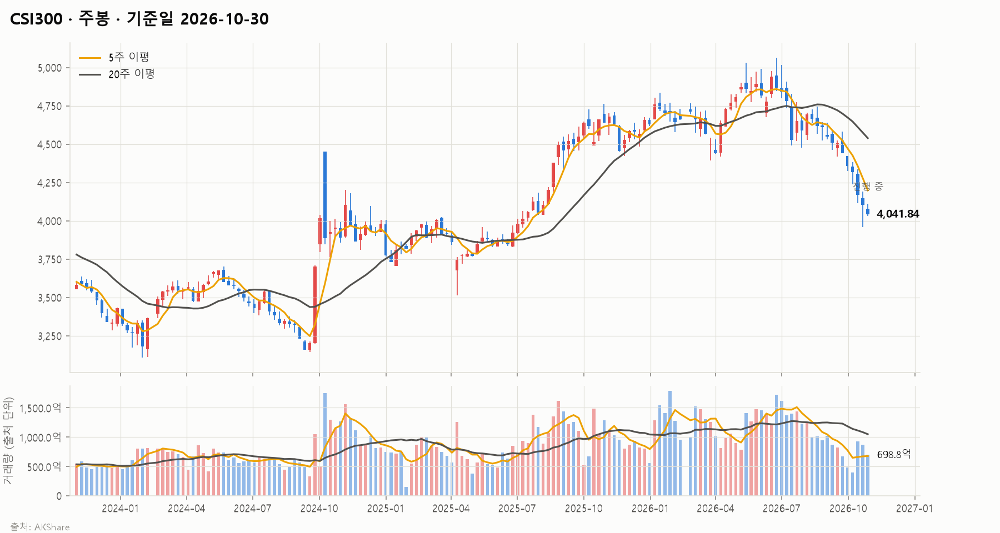
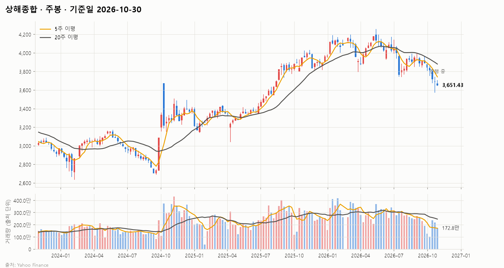
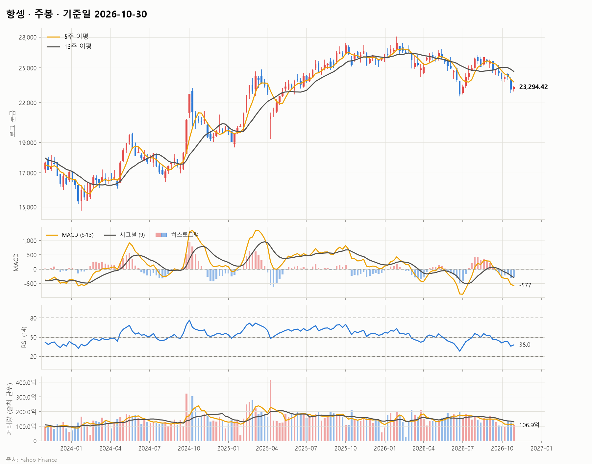
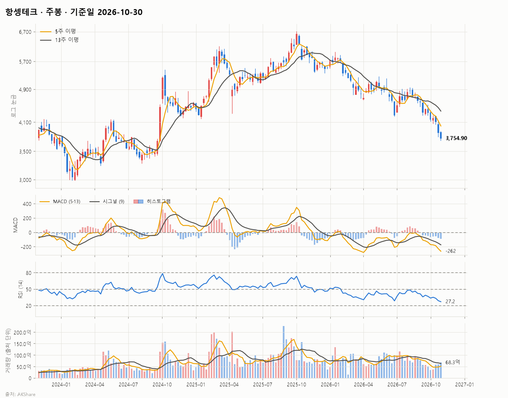
주요 요인
- [이익·밸류] 이익 둔화 속 기록적 연속 하락 — CSI300은 10월 22일 4,036.30에 마감해 6월 고점 대비 약 20% 하락하며 약세장에 진입했고, 주간 기준 10주 연속 하락으로 사상 최장 기록을 세웠다 (Khan Capital). CSI300의 최근 12개월 EPS는 9월 말 349.2로 3개월 전 361.6보다 3.4% 줄었다 (AKShare, 2.5절). 해석: 상반기 AI 랠리가 되돌려지는 가운데 이익도 줄어 밸류에이션 하락과 이익 감소가 겹쳤다.
- [경기] 성장률 호조가 오히려 부양 기대를 낮춤 — 3분기 GDP는 전년비 4.5%로 예상(4.4%)을 웃돌았지만 9월 소매판매는 1.1% 증가에 그쳤다 (Khan Capital). 9월 PPI는 전년비 +5.0%로 1년 전 −2.3%에서 크게 올랐다 (AKShare, 2.2절). 해석: 성장률 목표 달성과 생산자물가 상승으로 대규모 부양이나 공격적 완화 기대가 줄었고, 가계 수요는 여전히 약하다.
- [기타] 희토류 수출통제 유예 종료 임박 — 2025년 11월 7일 발표된 희토류 수출통제 확대 조치의 1년 유예가 2026년 11월 10일 끝나며, 연장 소식은 없다 (Pomegra). 해석: 미중 갈등 재점화 가능성이 위험 회피를 키우는 요인이다.
- [환율·수급] 홍콩 기술주 낙폭 확대 — 항셍테크는 최근 1개월 −11.7%, 3개월 −21.8%로 항셍(−5.4%, −9.9%)보다 크게 떨어졌다. AH 프리미엄 지수는 133.7(10/29)로 3개월 전 122.5에서 올라 H주가 A주보다 더 약했다 (AKShare, 지수 현황 표·2.6절). 다만 10월 30일에는 항셍이 1.46% 올라 23,294.42에 마감하며 CSI300(−1.4%)과 엇갈렸다 (Bastille Post, 종가는 Yahoo Finance와 대조). 해석: AI·기술주 조정이 해외 자금 비중이 큰 홍콩에 더 크게 반영돼 왔다.
2. 지표 (최근 3년)
2.1 경기
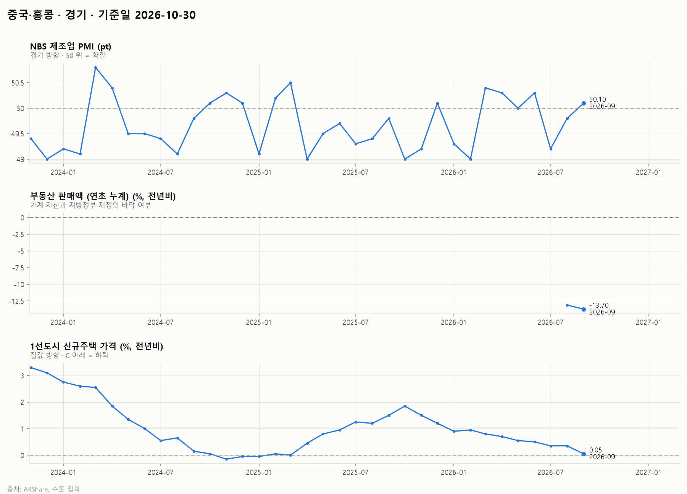
| 지표 |
최신값 |
기준 시점 |
3개월 전 |
1년 전 |
| NBS 제조업 PMI (pt) |
50.10 |
2026-09 |
50.30 |
49.80 |
| 부동산 판매액 (연초 누계) (%, 전년비) |
-13.70 |
2026-09 |
— |
— |
| 1선도시 신규주택 가격 (%, 전년비) |
0.05 |
2026-09 |
0.50 |
1.50 |
데이터 메모:
- 부동산 판매액 (연초 누계): 수동 입력 값 2개뿐 (2026-08부터)
2.2 물가
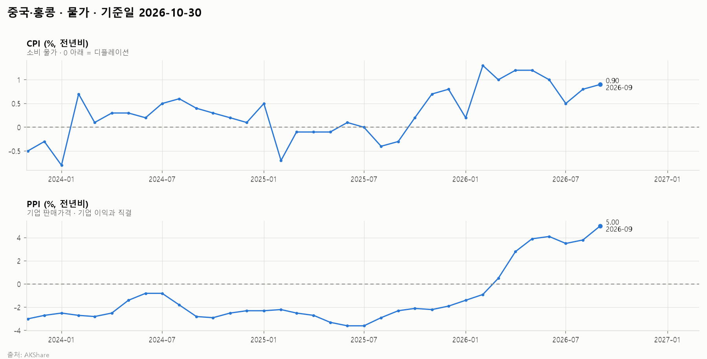
| 지표 |
최신값 |
기준 시점 |
3개월 전 |
1년 전 |
| CPI (%, 전년비) |
0.90 |
2026-09 |
1.00 |
-0.30 |
| PPI (%, 전년비) |
5.00 |
2026-09 |
4.10 |
-2.30 |
2.3 정책·금리
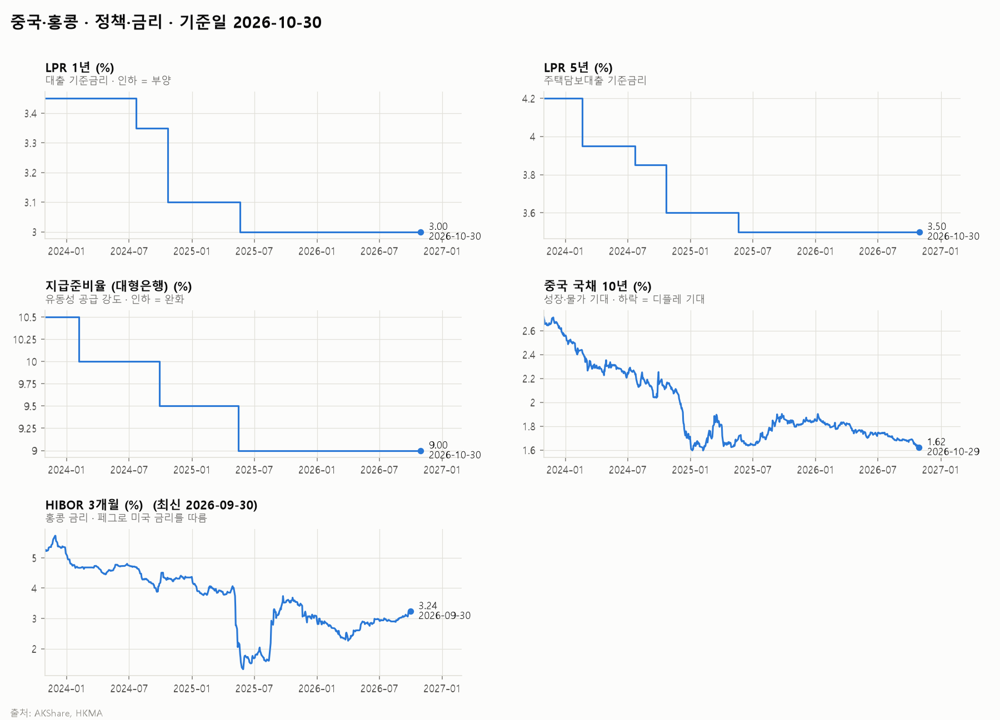
| 지표 |
최신값 |
기준 시점 |
3개월 전 |
1년 전 |
| LPR 1년 (%) |
3.00 |
2026-10-30 |
3.00 |
3.00 |
| LPR 5년 (%) |
3.50 |
2026-10-30 |
3.50 |
3.50 |
| 지급준비율 (대형은행) (%) |
9.00 |
2026-10-30 |
9.00 |
9.00 |
| 중국 국채 10년 (%) |
1.62 |
2026-10-29 |
1.73 |
1.82 |
| HIBOR 3개월 (%) |
3.24 |
2026-09-30 |
2.97 |
3.53 |
데이터 메모:
- HIBOR 3개월: 최신 데이터가 2026-09-30로 지연
2.4 유동성·신용
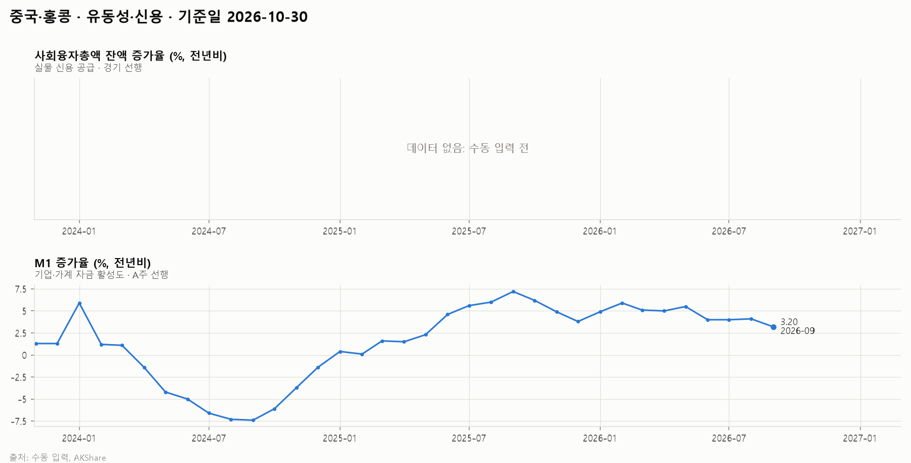
| 지표 |
최신값 |
기준 시점 |
3개월 전 |
1년 전 |
| 사회융자총액 잔액 증가율 (%, 전년비) |
7.10 |
2026-09 |
— |
— |
| M1 증가율 (%, 전년비) |
3.20 |
2026-09 |
4.00 |
7.20 |
데이터 메모:
- 사회융자총액 잔액 증가율: 수동 입력 값 2개뿐 (2026-08부터)
2.5 이익·밸류
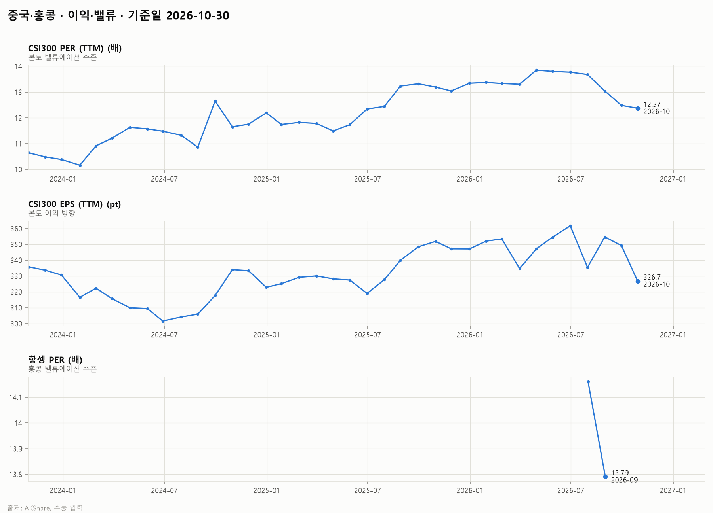
| 지표 |
최신값 |
기준 시점 |
3개월 전 |
1년 전 |
| CSI300 PER (TTM) (배) |
12.48 |
2026-09 |
13.77 |
13.32 |
| CSI300 EPS (TTM) (pt) |
349.2 |
2026-09 |
361.6 |
348.4 |
| 항셍 PER (배) |
13.79 |
2026-09 |
— |
— |
데이터 메모:
- 항셍 PER: 수동 입력 값 2개뿐 (2026-08부터)
2.6 환율·수급
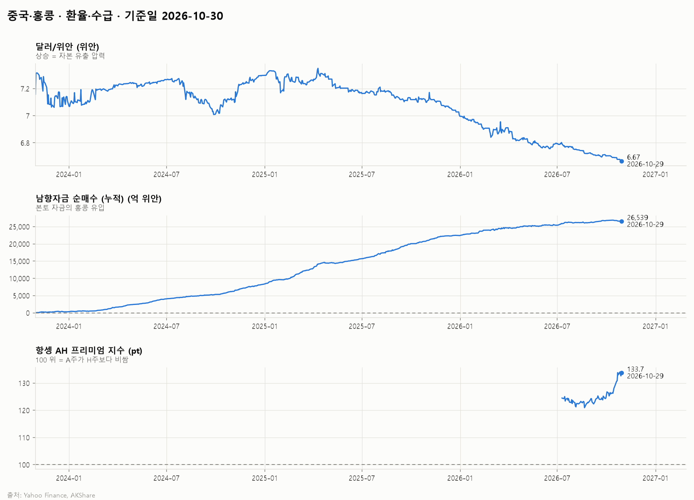
| 지표 |
최신값 |
기준 시점 |
3개월 전 |
1년 전 |
| 달러/위안 (위안) |
6.67 |
2026-10-29 |
6.77 |
7.10 |
| 남향자금 순매수 (누적) (억 위안) |
26,539 |
2026-10-29 |
26,162 |
20,761 |
| 항셍 AH 프리미엄 지수 (pt) |
133.7 |
2026-10-29 |
122.5 |
— |
데이터 메모:
- 항셍 AH 프리미엄 지수: 이력이 2026-07-10부터만 있음
정정
- 2026-10-30 (발행 후): 수동 입력 대상이던 지표를 보완했다. 발행 시점(asof 2026-10-30 12:10 KST)과 지수 수치는 그대로다.
- 수동 입력: 사회융자총액 잔액 증가율·부동산 판매액(2026년 8~9월), 항셍 PER(2026년 8~9월)
- 2026-10-31: 발행 시점을 2026-10-30 12:10에서 23:59 KST로 옮겨 다시 만들었다. 한국·중국/홍콩·일본 지수에 10월 30일 종가를 반영하기 위해서다. 미국·유럽 지수는 그 시각까지 확정된 10월 29일 종가 그대로다. 데이터를 다시 받으면서 그 사이 갱신된 지표 값도 반영됐다.
- 한 줄 요약과 주요 요인 1·4번 수치를 10월 30일 종가 기준으로 고쳤다. CSI300 EPS(TTM)는 10월 값의 날짜가 발행일 당일이라 미확정 규칙에 따라 빠지고 9월 말 값(349.2)으로 바뀌었다.
- HIBOR 3개월은 HKMA 접속이 회복돼 채워졌다.
- 2026-10-31: 지수 캔들 차트의 가격 축을 로그 눈금으로 바꿨다. 수치는 바뀌지 않았다.
- 2026-10-31: 지수 주봉 차트의 이동평균을 5·20주에서 5주(한 달)·13주(분기)로 바꿨다. 수치는 바뀌지 않았다.
- 2026-10-31: 지수 주봉 차트의 가격과 거래량 사이에 MACD(5·13·9)와 RSI(14) 패널을 추가했다. 수치는 바뀌지 않았다.
일본 시장 보고서 · 2026-10-30
발행 시점 2026-10-30 23:59 KST · 요약 대상 기간 2026-09-30 ~ 2026-10-30
1. 시장 요약
닛케이225는 AI·반도체주 급락으로 10월 30일 2.12% 내린 63,290.11에 마감해 10월 한 달 5.2% 하락했고, 같은 날 일본은행은 금리를 1.25%로 동결했다.
지수 현황
기준: 발행 시점(2026-10-30 23:59 KST)에 확정된 각 지수의 직전 종가
| 지수 |
종가 |
종가일 |
1주 |
1개월 |
3개월 |
연초 대비 |
1년 |
52주 고점 대비 |
| 닛케이225 |
63,290.11 |
2026-10-30 |
+1.0% |
-5.2% |
+2.3% |
+25.7% |
+23.3% |
-13.1% |
| TOPIX (ETF 대용) |
416.40 |
2026-10-30 |
+0.0% |
-3.5% |
+0.9% |
+16.3% |
+20.4% |
-5.8% |
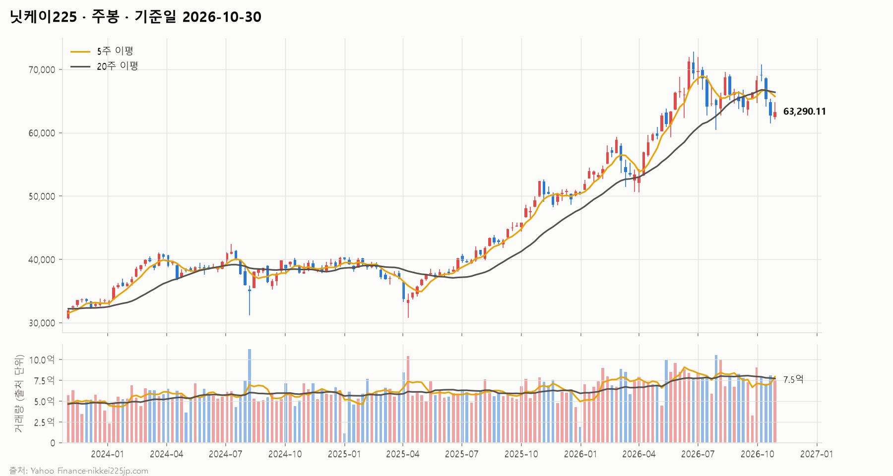
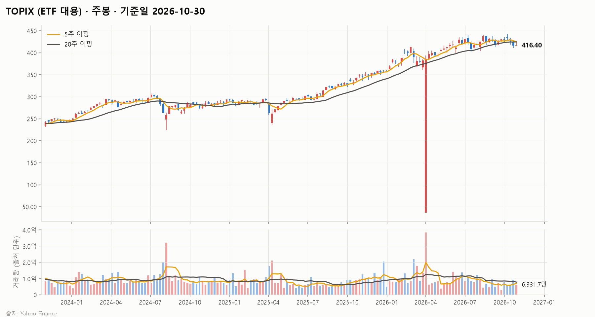
주요 요인
- [정책·금리] 일본은행 동결, 정상화 기조는 유지 — 일본은행은 10월 30일 정책금리를 1.25%로 동결했다 (동방재부, 2.3절). 우에다 총재는 기조 물가가 2%에 대체로 부합하지만 지속적·안정적으로 달성됐다고 보지는 않는다고 밝혔고, 보유 ETF 매각 속도를 높이기로 했다 (Nikkei Asia). 정책금리는 9월 인상으로 1995년 4월 이후 최고 수준이고 (10bmnews), JGB 10년물 금리는 2.88%(10/29)로 1년 전 1.66%보다 1.2%p 높다 (일본 재무성, 2.3절). 해석: 이번엔 동결했지만 정상화 기조가 이어져, 추가 인상 가능성이 밸류에이션과 엔화 강세 양쪽에서 부담으로 남는다.
- [이익·밸류] AI 반도체주 쏠림과 변동성 — 10월 30일 닛케이225는 1,369.36포인트(2.12%) 내린 63,290.11에 마감했다 (Japan Daily Sun, 종가는 nikkei225jp.com과 대조). 장중 알파벳 실적 부진 여파로 어드밴테스트(−5.43%), 소프트뱅크그룹(−4.66%), 도쿄일렉트론(−3.93%)이 급락한 반면 같은 시점 TOPIX 하락폭은 0.65%였다 (10bmnews). 해석: 닛케이는 소수 AI·반도체 대형주의 영향이 커서 미국 빅테크 실적에 TOPIX보다 훨씬 민감하다.
- [환율·수급] 엔화 강세 전환 — 달러/엔은 157.8엔(10/29)으로 3개월 전 163.9엔보다 엔화가 약 4% 강해졌다 (Yahoo Finance, 2.6절). 해석: 수출기업의 엔화 환산 이익에 불리하고, 일본은행 인상이 이어지면 엔 강세 압력이 더 커질 수 있다.
2. 지표 (최근 3년)
2.1 경기
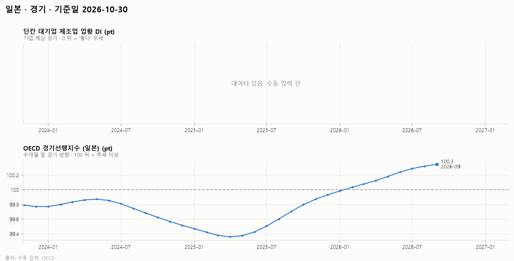
| 지표 |
최신값 |
기준 시점 |
3개월 전 |
1년 전 |
| 단칸 대기업 제조업 업황 DI (pt) |
24.00 |
2026-Q3 |
22.00 |
14.00 |
| OECD 경기선행지수 (일본) (pt) |
100.3 |
2026-09 |
100.2 |
99.71 |
데이터 메모:
- 단칸 대기업 제조업 업황 DI: 수동 입력 값 11개뿐 (2024-Q1부터)
2.2 물가
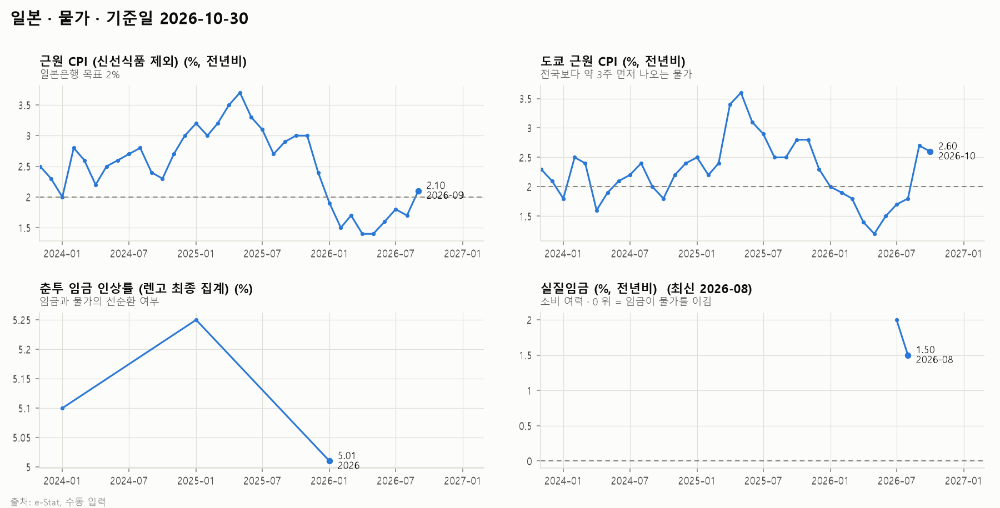
| 지표 |
최신값 |
기준 시점 |
3개월 전 |
1년 전 |
| 근원 CPI (신선식품 제외) (%, 전년비) |
2.10 |
2026-09 |
1.60 |
2.90 |
| 도쿄 근원 CPI (%, 전년비) |
2.60 |
2026-10 |
1.70 |
2.80 |
| 춘투 임금 인상률 (렌고 최종 집계) (%) |
5.01 |
2026 |
5.25 |
5.25 |
| 실질임금 (%, 전년비) |
1.50 |
2026-08 |
— |
— |
데이터 메모:
- 춘투 임금 인상률 (렌고 최종 집계): 수동 입력 값 3개뿐 (2024부터)
- 실질임금: 수동 입력 값 2개뿐 (2026-07부터)
- 실질임금: 최신 데이터가 2026-08로 지연
2.3 정책·금리
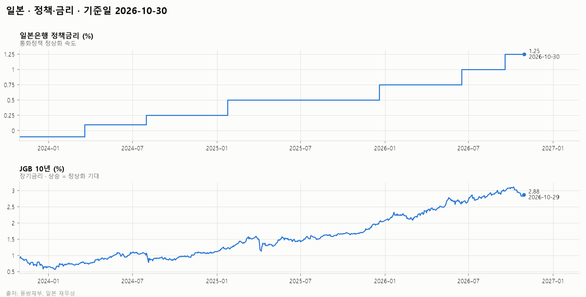
| 지표 |
최신값 |
기준 시점 |
3개월 전 |
1년 전 |
| 일본은행 정책금리 (%) |
1.25 |
2026-10-30 |
1.00 |
0.50 |
| JGB 10년 (%) |
2.88 |
2026-10-29 |
2.76 |
1.66 |
2.4 유동성·신용
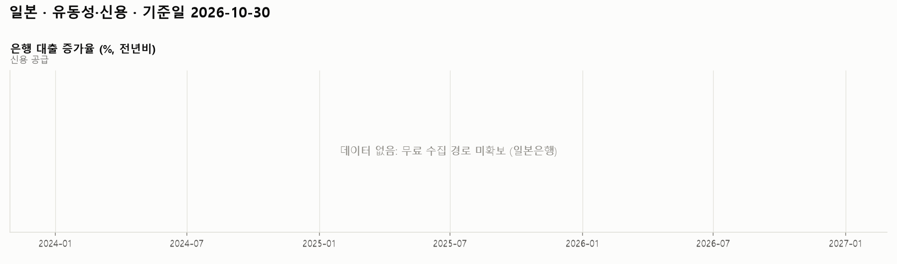
| 지표 |
최신값 |
기준 시점 |
3개월 전 |
1년 전 |
| 은행 대출 증가율 (%, 전년비) |
— |
— |
— |
— |
데이터 메모:
- 은행 대출 증가율: 데이터 없음 (무료 수집 경로 미확보 (일본은행))
2.5 이익·밸류
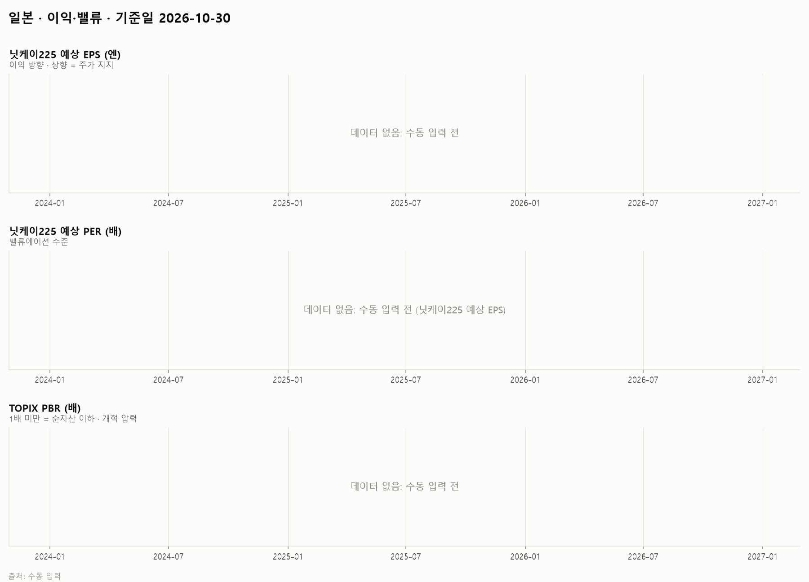
| 지표 |
최신값 |
기준 시점 |
3개월 전 |
1년 전 |
| 닛케이225 예상 EPS (엔) |
3,851 |
2026-10-29 |
3,517 |
2,688 |
| 닛케이225 예상 PER (배) |
16.79 |
2026-10-29 |
17.47 |
19.09 |
| 닛케이225 PBR (배) |
1.84 |
2026-10-29 |
1.85 |
1.69 |
2.6 환율·수급
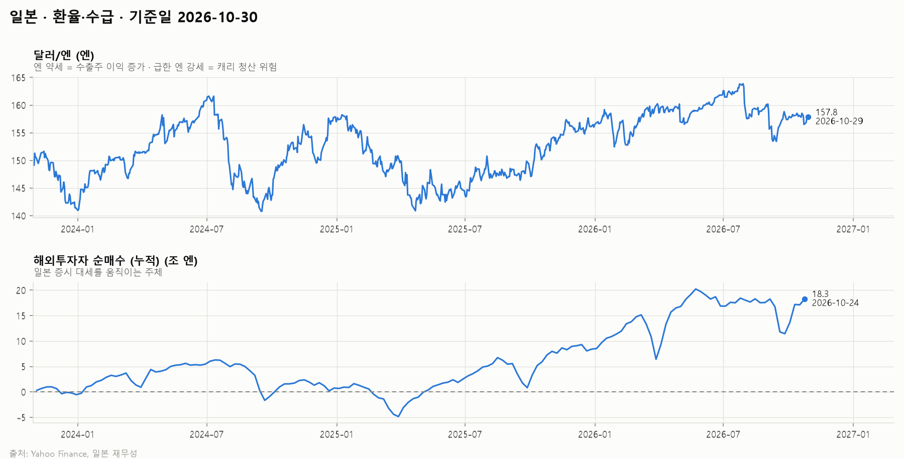
| 지표 |
최신값 |
기준 시점 |
3개월 전 |
1년 전 |
| 달러/엔 (엔) |
157.8 |
2026-10-29 |
163.9 |
151.7 |
| 해외투자자 순매수 (누적) (조 엔) |
18.3 |
2026-10-24 |
17.5 |
5.9 |
정정
- 2026-10-30 (발행 후): 일본 e-Stat을 연결해 근원 CPI(신선식품 제외)와 도쿄 근원 CPI를 채웠다. 발행 시점(asof 2026-10-30 12:10 KST)과 지수 수치는 그대로다. 실질임금은 e-Stat API에 최신 시계열이 없어 수동 입력 대상으로 바꿨다.
- 2026-10-30 (발행 후): 수동 입력 대상이던 지표를 보완했다. 발행 시점(asof 2026-10-30 12:10 KST)과 지수 수치는 그대로다.
- 자동 수집으로 전환: 일본은행 정책금리(동방재부 경유), 해외투자자 순매수(재무성 주간 대내 증권투자로 출처 변경), 닛케이225 예상 PER(nikkei225jp.com 경유, 닛케이 공표 가중평균)
- 대체: TOPIX PBR → 닛케이225 PBR. TOPIX PBR은 무료 이력이 없음
- 수동 입력: 단칸 대기업 제조업 DI(2024년 3월~2026년 9월 조사), 춘투 임금 인상률(2024~2026년), 실질임금(2026년 7~8월)
- 2026-10-31: 발행 시점을 2026-10-30 12:10에서 23:59 KST로 옮겨 다시 만들었다. 한국·중국/홍콩·일본 지수에 10월 30일 종가를 반영하기 위해서다. 미국·유럽 지수는 그 시각까지 확정된 10월 29일 종가 그대로다. 데이터를 다시 받으면서 그 사이 갱신된 지표 값도 반영됐다.
- 한 줄 요약과 주요 요인 1·2번을 고쳐 일본은행 결정(1.25% 동결)과 닛케이225 10월 30일 종가를 반영했다.
- 닛케이225는 Yahoo에 10월 30일 종가가 비어 있어 nikkei225jp.com 종가(63,290.11)로 채웠다.
- 2026-10-31: 지수 캔들 차트의 가격 축을 로그 눈금으로 바꿨다. 수치는 바뀌지 않았다.
- 2026-10-31: 지수 주봉 차트의 이동평균을 5·20주에서 5주(한 달)·13주(분기)로 바꿨다. 수치는 바뀌지 않았다.
- 2026-10-31: 지수 주봉 차트의 가격과 거래량 사이에 MACD(5·13·9)와 RSI(14) 패널을 추가했다. 수치는 바뀌지 않았다.
유럽 시장 보고서 · 2026-10-30
발행 시점 2026-10-31 07:00 KST · 요약 대상 기간 2026-09-30 ~ 2026-10-30
1. 시장 요약
STOXX 600은 ECB 동결과 에너지·소비재 실적에 힘입어 10월 한 달 1.9% 올랐지만, 마지막 거래일인 10월 30일에는 미국발 AI 투자 우려로 반도체주가 떨어지며 0.36% 내린 646.75에 마감했다.
지수 현황
기준: 발행 시점(2026-10-31 07:00 KST)에 확정된 각 지수의 직전 종가
| 지수 |
종가 |
종가일 |
1주 |
1개월 |
3개월 |
연초 대비 |
1년 |
52주 고점 대비 |
| STOXX 600 |
646.75 |
2026-10-30 |
+1.7% |
+1.9% |
-0.5% |
+9.1% |
+12.5% |
-2.5% |
| Euro Stoxx 50 |
6,131.31 |
2026-10-30 |
+1.0% |
-2.2% |
-3.4% |
+5.8% |
+7.6% |
-6.8% |
| DAX |
25,818.21 |
2026-10-30 |
+2.5% |
+2.5% |
+0.8% |
+5.4% |
+7.0% |
-3.0% |
| FTSE 100 |
10,729.80 |
2026-10-30 |
+0.4% |
+1.2% |
-1.5% |
+8.0% |
+9.9% |
-2.4% |
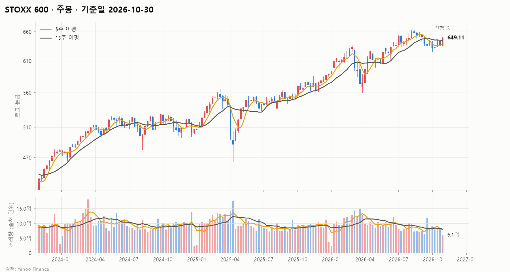
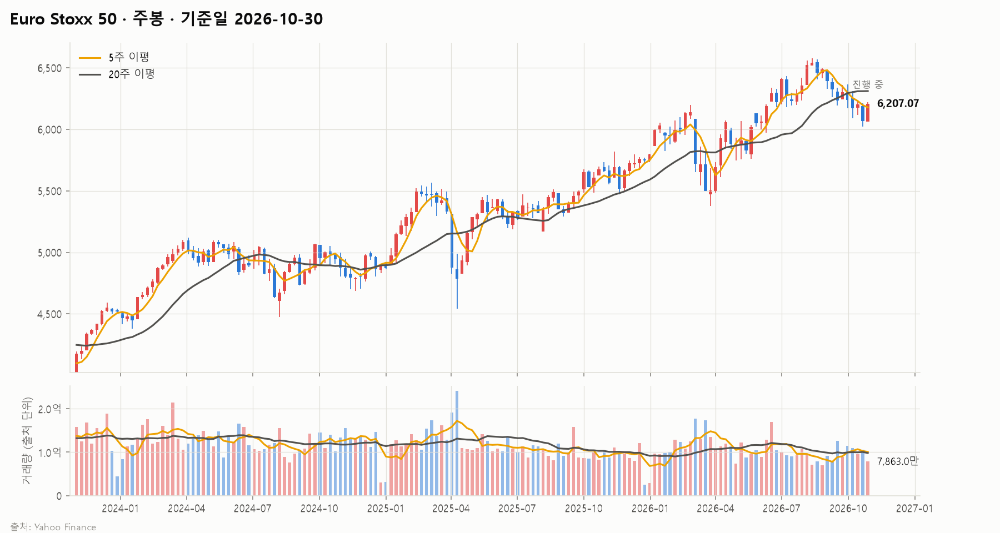
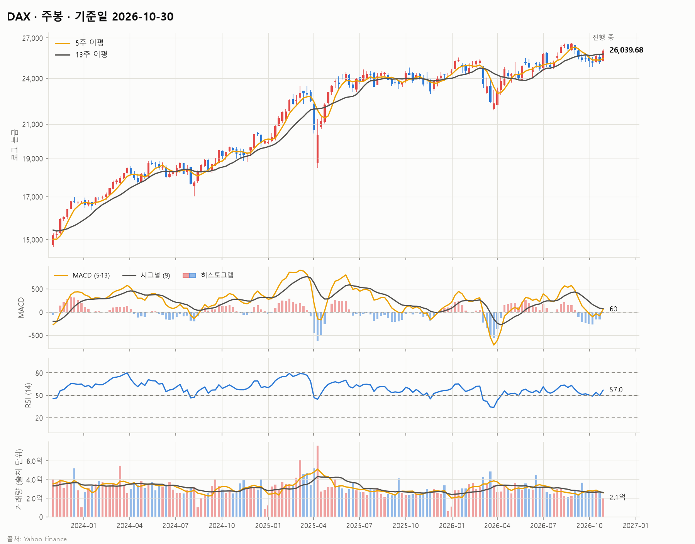
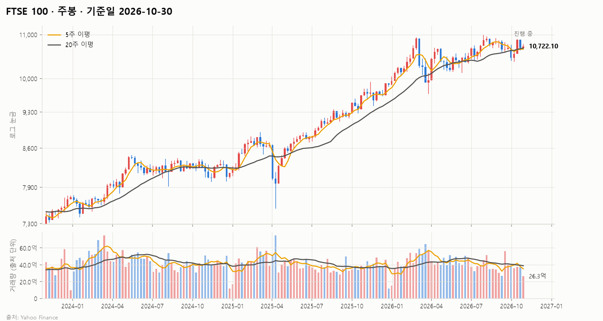
주요 요인
- [정책·금리] ECB 동결 — ECB는 10월 29일 예금금리를 2.50%로 동결했다. 6월과 9월 인상 이후 '전술적 휴지'이며, 직전 회의 이후 금융 여건이 긴축됐고 에너지 가격이 계속 오른다고 언급했다. 당일 STOXX 600은 0.8% 올라 9월 8일 이후 최고였다 (Yahoo Finance). 해석: 추가 인상을 서두르지 않는다는 신호로 받아들여져 주가에 안도감을 줬다.
- [정책·금리] 프랑스 국채 금리 급등 — 프랑스 10년물 금리는 10월 21일 2002년 7월 이후 처음 5%를 넘었고, OAT−Bund 스프레드는 10월 23일 176bp로 2011년 이후 최대였다가 29일 약 155bp로 좁혀졌다. 과반 없는 정부의 2027년 예산안 표결(11/3)과 GDP 대비 약 5.4%의 재정적자가 배경이다 (Admirals). 해석: 유로존 재정 리스크가 다시 커지면 은행주와 유로화에 부담이 된다. 11월 3일 표결이 단기 고비다.
- [이익·밸류] 미국발 AI 투자 우려로 반도체주 하락 — 10월 30일 아마존(3분기 설비투자 773억 달러, 최근 12개월 잉여현금흐름 −424억 달러)과 인텔(4분기 매출 가이던스 하회) 실적 여파로 ASML·ASM 인터내셔널·BE 세미컨덕터가 5% 넘게, 인피니언이 4% 넘게 떨어졌다. 같은 날 DAX는 0.9% 내렸고 FTSE 100은 0.1% 올랐다 (Yahoo Finance, 지수 등락은 지수 현황 표와 대조). 해석: AI 투자 수익성 우려가 유럽 반도체 장비주로 번졌지만, 기술주 비중이 작은 유럽 지수의 낙폭은 미국보다 작았다.
- [이익·밸류] 3분기 실적 엇갈림 — 셸은 분기 순이익이 예상을 넘어 2.6% 올랐고 아디다스는 연간 전망 상향으로 2.5% 올랐다. 폭스바겐은 9개월 영업이익이 98.7% 줄어 1.6% 떨어졌다 (Yahoo Finance). 해석: 에너지와 일부 소비재는 버티지만 자동차 등 제조업 이익은 크게 훼손됐다.
- [환율·원자재] 에너지 가격 상승 — 유럽 천연가스(TTF)는 MWh당 103.9유로(10/30)로 3개월 전 58.2유로, 1년 전 31.1유로에서 크게 올랐다 (Yahoo Finance, 2.6절). 해석: 제조업 비용과 물가를 함께 압박해 ECB 정책과 경기 모두에 부담이다.
2. 지표 (최근 3년)
2.1 경기
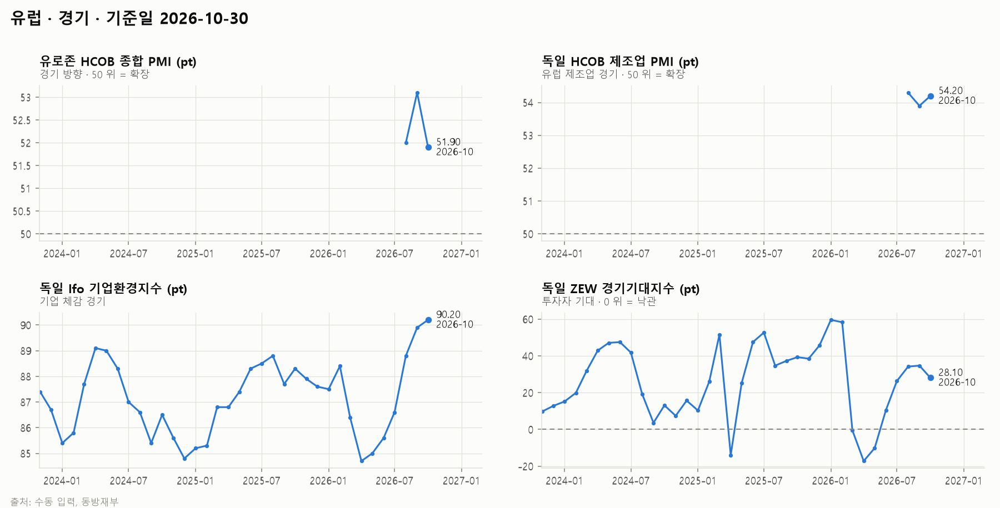
| 지표 |
최신값 |
기준 시점 |
3개월 전 |
1년 전 |
| 유로존 HCOB 종합 PMI (pt) |
51.90 |
2026-10 |
— |
— |
| 독일 HCOB 제조업 PMI (pt) |
54.20 |
2026-10 |
— |
— |
| 독일 Ifo 기업환경지수 (pt) |
90.20 |
2026-10 |
86.60 |
88.30 |
| 독일 ZEW 경기기대지수 (pt) |
28.10 |
2026-10 |
26.30 |
39.30 |
데이터 메모:
- 유로존 HCOB 종합 PMI: 수동 입력 값 3개뿐 (2026-08부터)
- 독일 HCOB 제조업 PMI: 수동 입력 값 3개뿐 (2026-08부터)
2.2 물가
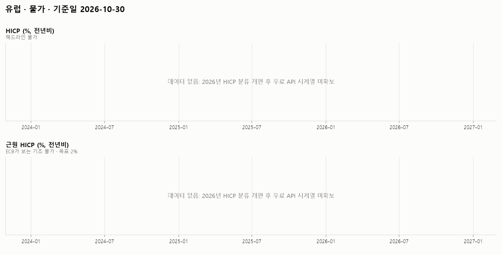
| 지표 |
최신값 |
기준 시점 |
3개월 전 |
1년 전 |
| HICP (%, 전년비) |
— |
— |
— |
— |
| 근원 HICP (%, 전년비) |
— |
— |
— |
— |
데이터 메모:
- HICP: 데이터 없음 (2026년 HICP 분류 개편 후 무료 API 시계열 미확보)
- 근원 HICP: 데이터 없음 (2026년 HICP 분류 개편 후 무료 API 시계열 미확보)
2.3 정책·금리
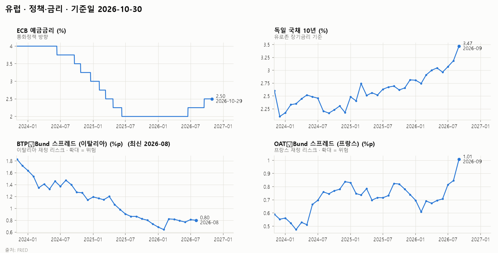
| 지표 |
최신값 |
기준 시점 |
3개월 전 |
1년 전 |
| ECB 예금금리 (%) |
2.50 |
2026-10-30 |
2.25 |
2.00 |
| 독일 국채 10년 (%) |
3.47 |
2026-09 |
2.96 |
2.69 |
| BTP−Bund 스프레드 (이탈리아) (%p) |
0.80 |
2026-08 |
0.79 |
0.86 |
| OAT−Bund 스프레드 (프랑스) (%p) |
1.01 |
2026-09 |
0.71 |
0.82 |
데이터 메모:
- BTP−Bund 스프레드 (이탈리아): 최신 데이터가 2026-08로 지연
2.4 유동성·신용
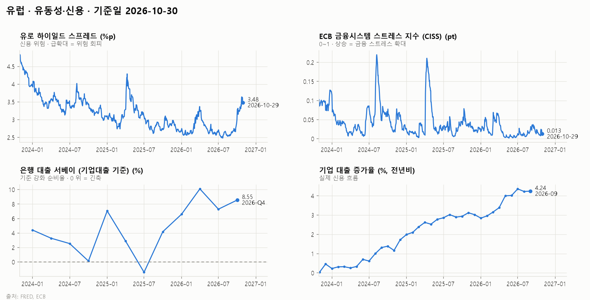
| 지표 |
최신값 |
기준 시점 |
3개월 전 |
1년 전 |
| 유로 하이일드 스프레드 (%p) |
3.48 |
2026-10-29 |
2.64 |
2.78 |
| ECB 금융시스템 스트레스 지수 (CISS) (pt) |
0.013 |
2026-10-29 |
0.010 |
0.037 |
| 은행 대출 서베이 (기업대출 기준) (%) |
8.55 |
2026-Q4 |
7.29 |
4.18 |
| 기업 대출 증가율 (%, 전년비) |
4.24 |
2026-09 |
4.02 |
2.90 |
2.5 이익·밸류
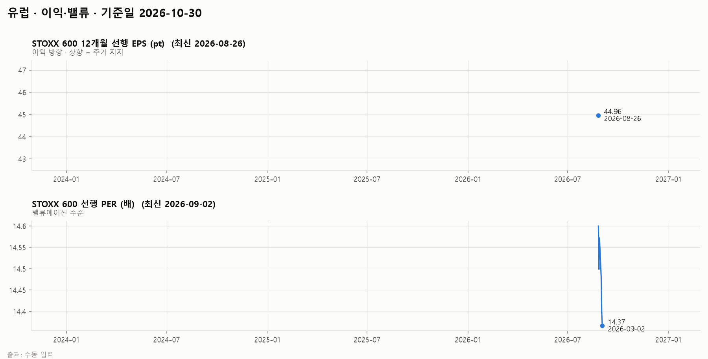
| 지표 |
최신값 |
기준 시점 |
3개월 전 |
1년 전 |
| STOXX 600 12개월 선행 EPS (pt) |
44.96 |
2026-08-26 |
— |
— |
| STOXX 600 선행 PER (배) |
14.37 |
2026-09-02 |
— |
— |
데이터 메모:
- STOXX 600 12개월 선행 EPS: 수동 입력 값 1개뿐 (2026-08-26부터)
- STOXX 600 12개월 선행 EPS: 최신 데이터가 2026-08-26로 지연
- STOXX 600 선행 PER: 이력이 2026-08-26부터만 있음
- STOXX 600 선행 PER: 최신 데이터가 2026-09-02로 지연
2.6 환율·원자재
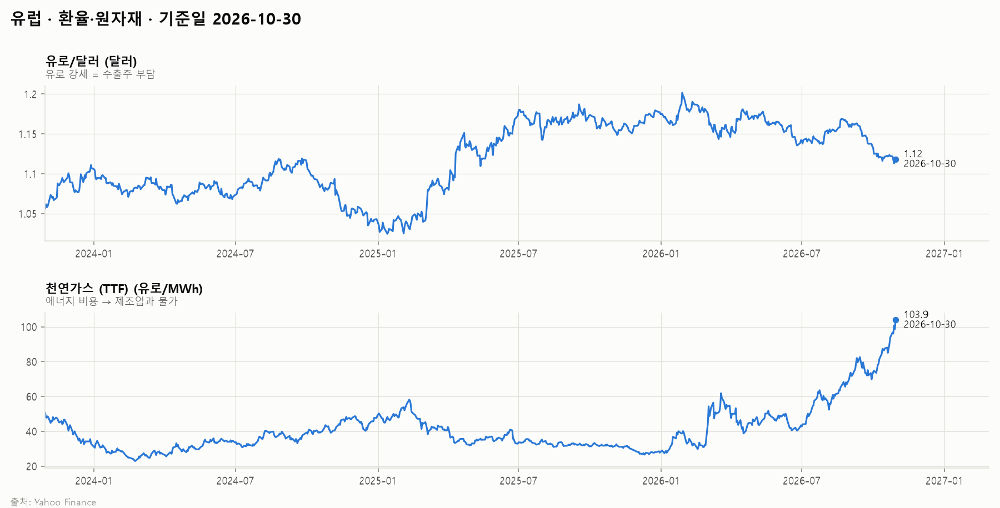
| 지표 |
최신값 |
기준 시점 |
3개월 전 |
1년 전 |
| 유로/달러 (달러) |
1.12 |
2026-10-30 |
1.15 |
1.16 |
| 천연가스 (TTF) (유로/MWh) |
103.9 |
2026-10-30 |
58.18 |
31.05 |
정정
- 2026-10-30 (발행 후): 수동 입력 대상이던 지표를 보완했다. 발행 시점(asof 2026-10-30 12:10 KST)과 지수 수치는 그대로다.
- 자동 수집으로 전환: 독일 Ifo·ZEW (동방재부 경유)
- 수동 입력: 유로존 종합 PMI·독일 제조업 PMI(2026년 8~10월, 10월은 속보치), STOXX 600 선행 EPS 1개 시점(2026-08-26)
- 2026-10-31: 발행 시점을 2026-10-30 12:10에서 23:59 KST로 옮겨 다시 만들었다. 한국·중국/홍콩·일본 지수에 10월 30일 종가를 반영하기 위해서다. 미국·유럽 지수는 그 시각까지 확정된 10월 29일 종가 그대로다. 데이터를 다시 받으면서 그 사이 갱신된 지표 값도 반영됐다.
- 지표 추가: ECB 금융시스템 스트레스 지수(CISS). 유로 하이일드 스프레드는 10월 29일 값이 반영됐다.
- 2026-10-31: 지수 캔들 차트의 가격 축을 로그 눈금으로 바꿨다. 수치는 바뀌지 않았다.
- 2026-10-31: 지수 주봉 차트의 이동평균을 5·20주에서 5주(한 달)·13주(분기)로 바꿨다. 수치는 바뀌지 않았다.
- 2026-10-31: 지수 주봉 차트의 가격과 거래량 사이에 MACD(5·13·9)와 RSI(14) 패널을 추가했다. 수치는 바뀌지 않았다.
- 2026-10-31: 발행 시점을 2026-10-31 07:00 KST로 옮겨 유럽 지수에 10월 30일 종가를 반영했다 (유럽 세션은 한국 시간 10월 31일 새벽 마감). 한 줄 요약을 고치고 주요 요인에 10월 30일 반도체주 하락(3번)을 추가했으며, 에너지 요인(5번)의 TTF 수치를 새 값으로 고쳤다. 이전 TTF 수치(97.5유로, 10월 29일)는 재수집 후 표 값(98.6유로)과 달랐다.